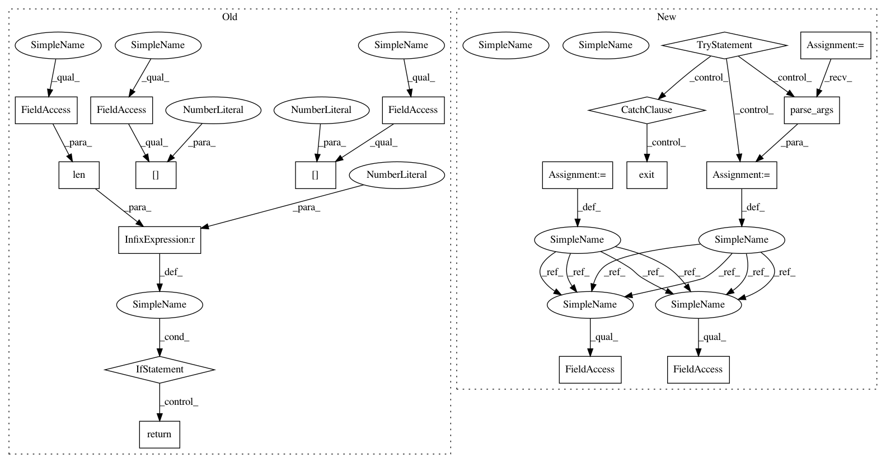

f2c3c23b3c174ffdbd9ab24aff9b68ffb2acd94a,REINFORCE.py,,main,#,248
Before Change
self.session.run(init)
def main():
if(len(sys.argv) < 3):
print("Please provide the name of an environment and a path to save monitor files")
return
env = gym.make(sys.argv[1])
rank = len(env.observation_space.shape) // Observation space rank
if isinstance(env.action_space, Discrete):
action_selection = ProbabilisticCategoricalActionSelection()
if rank == 1:
agent = REINFORCELearnerDiscrete(env, action_selection, sys.argv[2])
else:
agent = REINFORCELearnerDiscreteCNN(env, action_selection, sys.argv[2])
elif isinstance(env.action_space, Box):
action_selection = ContinuousActionSelection()
if rank == 1:
agent = REINFORCELearnerContinuous(env, action_selection, sys.argv[2])
else:
raise NotImplementedError
else:
raise NotImplementedError
try:
agent.env = wrappers.Monitor(agent.env, sys.argv[2], force=True)
agent.learn()
except KeyboardInterrupt:
pass
After Change
parser.add_argument("--rnn", action="store_true", default=False, help="Use a Recurrent Neural Network (only for envs with a state space of rank 1).")
def main():
try:
args = parser.parse_args()
except:
sys.exit()
env = gym.make(args.environment)
rank = len(env.observation_space.shape) // Observation space rank
if isinstance(env.action_space, Discrete):
action_selection = ProbabilisticCategoricalActionSelection()
if rank == 1:
agent = REINFORCELearnerDiscrete(env, action_selection, args.rnn, args.monitor_path)
else:
agent = REINFORCELearnerDiscreteCNN(env, action_selection, args.monitor_path)
elif isinstance(env.action_space, Box):
action_selection = ContinuousActionSelection()
if rank == 1:
agent = REINFORCELearnerContinuous(env, action_selection, args.rnn, args.monitor_path)
else:
raise NotImplementedError
else:
In pattern: SUPERPATTERN
Frequency: 3
Non-data size: 18
Instances
Project Name: arnomoonens/yarll
Commit Name: f2c3c23b3c174ffdbd9ab24aff9b68ffb2acd94a
Time: 2017-03-07
Author: x-006@hotmail.com
File Name: REINFORCE.py
Class Name:
Method Name: main
Project Name: arnomoonens/yarll
Commit Name: f2c3c23b3c174ffdbd9ab24aff9b68ffb2acd94a
Time: 2017-03-07
Author: x-006@hotmail.com
File Name: REINFORCE.py
Class Name:
Method Name: main
Project Name: arnomoonens/yarll
Commit Name: a392d4aaddd01d271ab150a7e1ceaadd1c382cf9
Time: 2016-12-05
Author: x-006@hotmail.com
File Name: A3C.py
Class Name:
Method Name: main
Project Name: arnomoonens/yarll
Commit Name: a392d4aaddd01d271ab150a7e1ceaadd1c382cf9
Time: 2016-12-05
Author: x-006@hotmail.com
File Name: A2C.py
Class Name:
Method Name: main